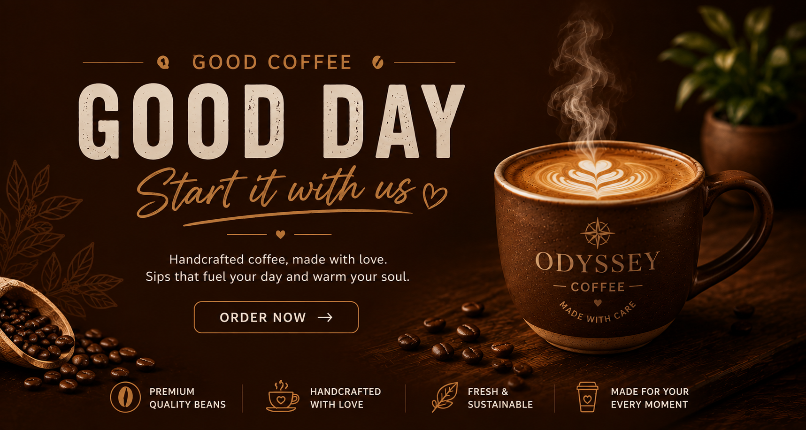

Welcome to a better morning. We source exceptional, single-origin beans from sustainable farms worldwide,
roasting them in small batches to bring out their unique, vibrant flavor profiles. Whether you are looking for a
smooth, rich espresso to start your day or a crisp, light pour-over to enjoy slowly, we craft every roast with
absolute care. Explore our curated selection today and elevate your daily coffee ritual.
At ODYSSEY, every cup is created to turn an ordinary coffee break into something worth remembering.

☕ Why Choose ODYSSEY?
01 — Premium Coffee Beans
Carefully selected beans roasted to bring out a rich aroma, smooth taste, and satisfying finish.
02 — Freshly Brewed, Every Time
Every cup is prepared fresh so customers get the full flavor and aroma of their coffee.
03 — Crafted by Passionate Baristas
Our baristas focus on consistency, presentation, and the perfect balance in every cup.
04 — Something for Every Coffee Lover
From creamy lattes and cappuccinos to bold espressos and refreshing cold coffees,
ODYSSEY offers a variety of
choices.
05 — Quality You Can Taste
We focus on quality ingredients and careful preparation instead of compromising for speed.
06 — A Place to Relax
A warm, comfortable atmosphere makes ODYSSEY suitable for catching up with friends,
studying, working, or simply
enjoying a quiet coffee.
07 — Made for Every Moment
Morning energy, afternoon breaks, evening conversations—there's always a reason to stop by ODYSSEY